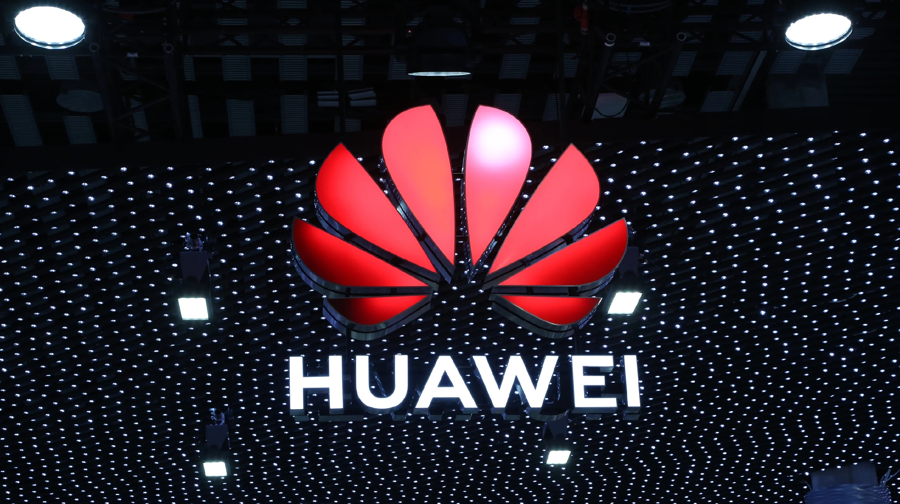

|
Опубликовано:12.10.20 13:26
Раскрыта внешность гибкого смартфона от Huawei
В сети опубликовали качественный рендер, на котором можно рассмотреть внешность будущего Huawei Mate X2. Об этом сообщает РИА "Новости".

По информации рендера, у новинки будет два экрана. Основной станет гибким, его диагональ составит 8 дюймов с разрешением 2480 х 2220 пикселей. Вспомогательный экран будет чуть меньше – 4,5 дюйма. Он расположится на внешней стороне корпуса.
О платформе Huawei Mate X2 пока не сообщается, но смартфон получит поддержку работы с 5G, четырехсенсорную камеру и возможность обновлять картинку на 120 Гц. Оперативная память составит 16 ГБ, а постоянная – 512 ГБ. Объем аккумулятора будет равняться 6000 мАч.
Планируется, что новый Huawei будет представлен в ноябре настоящего года.
Подготовил(а): Виктория НОВИК |
|